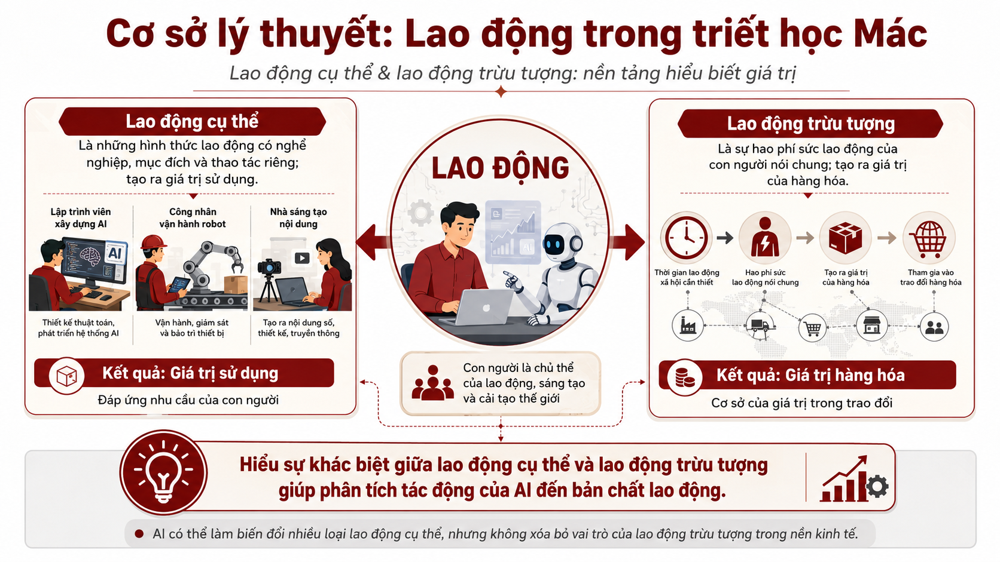

Trí tuệ nhân tạo
và người lao động
Sự biến đổi bản chất của lao động
Từ lao động cơ bắp đến lao động tri thức: phân tích sâu sắc về tác động của AI, robot và tự động hóa đến bản chất của lao động dưới góc nhìn lý luận Mác – Lênin.
Cơ sở lý thuyết: Lao động trong triết học Mác
Lao động cụ thể & lao động trừu tượng: nền tảng hiểu biết giá trị
Lao động cụ thể tạo ra giá trị sử dụng (khả năng đáp ứng nhu cầu); lao động trừu tượng tạo ra giá trị hàng hóa. Hiểu rõ sự khác biệt này giúp phân tích tác động của AI đến bản chất lao động.

Nếu máy móc thay thế lao động, giá trị được tạo ra như thế nào?
Điều này đặt ra các câu hỏi lý luận quan trọng về vai trò của máy móc, AI trong tạo ra giá trị và phân phối lợi ích xã hội.
Cách mạng công nghiệp lần thứ tư với AI, robot, dữ liệu lớn và tự động hóa đang tạo ra một bước chuyển mới: máy móc không chỉ thực hiện các công việc thể chất mà còn tham gia vào những hoạt động vốn đòi hỏi tư duy, phân tích và sáng tạo của con người.
Lao động cụ thể đang chuyển đổi hình thức
Lao động cụ thể: Sự chuyển đổi
Lao động trừu tượng: Vẫn tồn tại
Giá trị: Ai tạo ra?
Giá trị thặng dư và sự phân phối lợi ích
AI và tự động hóa làm thay đổi cách thức tạo ra và phân phối giá trị thặng dư — nền tảng của lợi nhuận và bất bình đẳng kinh tế.
Tác động tích cực
Rủi ro nếu không phân phối công bằng
Sự biến đổi bản chất của lao động
Ba hướng chuyển đổi chính
Từ trực tiếp sang điều khiển
Từ cơ bắp sang tri thức
Từ thay thế sang cộng tác
Phát triển nhân lực chất lượng cao cho Việt Nam
Nếu người lao động không được trang bị kiến thức và kỹ năng mới, nhiều công việc có tính lặp lại sẽ bị tự động hóa. Ngược lại, nếu Việt Nam phát triển được nguồn nhân lực chất lượng cao, công nghệ có thể trở thành động lực nâng cao năng suất và cạnh tranh quốc gia.
AI không thay đổi con người, con người thay đổi xã hội
AI, robot và tự động hóa không làm mất đi hoàn toàn vai trò của lao động con người mà đang làm thay đổi hình thức, nội dung và phương thức tổ chức lao động.
Vấn đề cốt lõi không phải "máy móc có thể làm được gì" mà "con người sẽ tổ chức xã hội và quan hệ sản xuất như thế nào để công nghệ phục vụ sự phát triển của con người".
Con người phát huy những năng lực mà AI khó thay thế: tư duy, sáng tạo, đạo đức, trách nhiệm và định hướng công nghệ.
Sách hướng dẫn chơi board game
Luật chơi và hướng dẫn dưới dạng sách lật — lật từng trang để đọc, hoặc mở toàn màn hình.